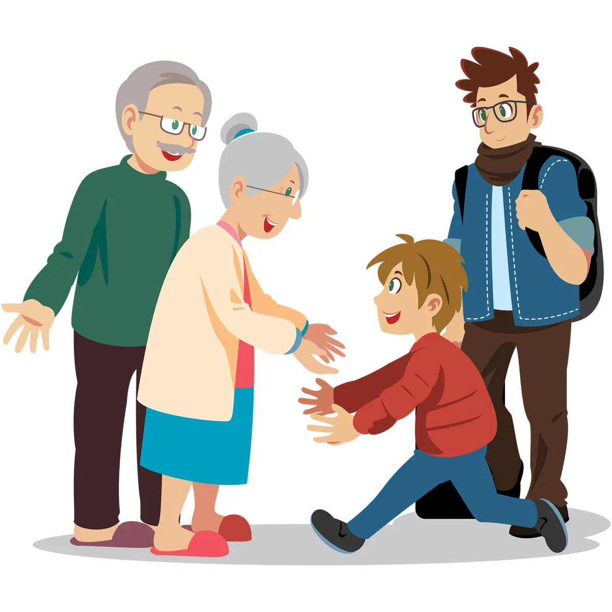
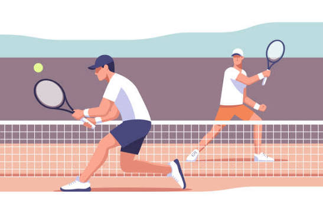
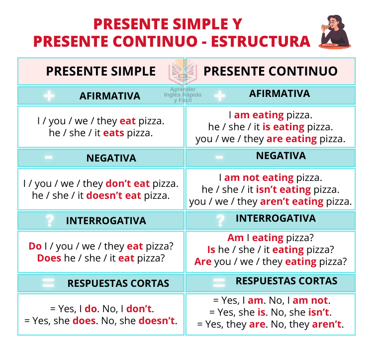

We use the past simple to talk about completed actions at a specific time in the past:
I visited my grandparents last weekend.

They traveled to Paris in 2022.
We use the Past Simple to talk about past habits or states:
She lived in London when she was a child.
We played tennis every Sunday last year.

Structure
REMEMBER: For affirmative sentences, we use regular verbs ending in -ED or irregular verbs (second column). For negative and questions, we use the auxiliary DID.

Practicing What I've Learned
Practicing What I've Learned: responde las preguntas aquí mismo y revisa tu puntaje. También puedes escribir un verbo y ver su pasado.